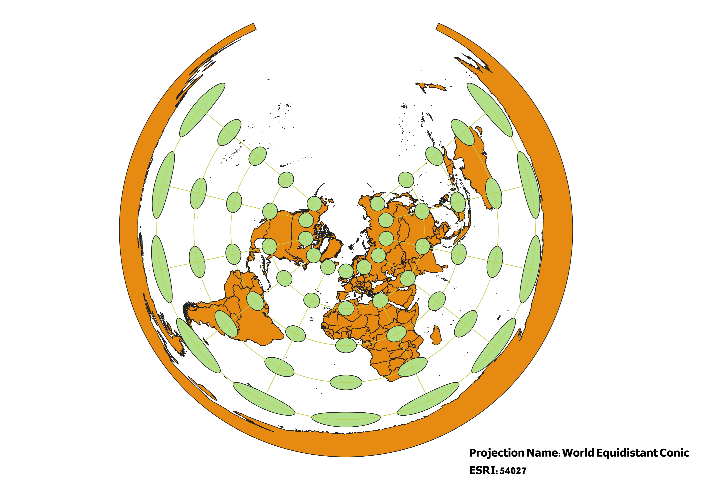

In this project I learned how to display images in different projections
Describe in your own words how you displayed the map in different projections using QGIS
In order to display the Natural Earth map in different projections I used the CRS tab in QGIS’s Project Properties to select the differing projections. Then once I selected each projection I used the Indicatrix Mapper plug-in I installed to apply Tissot's indicatrix to my maps. I created new print layouts for each of the map projections displayed below and saved them to my maps folder.
WGS84 Projection
WGS 84 is one of the most well-known and commonly used projections. This map minimizes distortion along the equator, preserving shape, but distortion increases as you move toward the poles.

Aitoff Projection
This map projection is an oval-shaped map. It preserves the relative sizes of areas on the Earth's surface. It also minimizes distortion along the equator but distortion increases as you move towards the poles and away from the prime meridian.

WGS 84 Pseudo-Mercator Projection
The Mercator projection’s indicatrices are circles because it is a conformal projection, meaning it preserves shapes. However, the Mercator projection doesn't preserve area and size correctly, especially as you get closer to the poles.
Sphere Winkle 1 Projection
Like the Aitoff projection this projection creates an oval-shaped map. This map is not an equal-area projection, but it makes an effort to preserve the relative sizes of landmasses and oceans. Distortion increases as you get closer to the poles.
World Cylindrical Equal Area Projection
This map is much more rectangular than the other projections, as it is cylindrical. The projection is meant to preserve the areas of the map well. There is little distortion in terms of shape and area along the equator, however, distortion increases as you move towards the poles.
World Equidistant Conic Projection
This appears to be a conformal projection, meaning it attempts to preserve shapes within the map. This map also aims to preserve distance as an equidistant projection. There is strong distortion near the poles, with different extremes.

North Pole Azimuthal Equidistant Projection
This appears to be a conformal projection, meaning it attempts to preserve shapes within the map. This map also aims to preserve direction as it is equidistant. There is strong distortion near the poles, with different extremes.
Sphere Winkel Tripel NGS
This projection creates an oval-shaped map.Though this is not an equal-area projection, it makes an effort to preserve the relative sizes of landmasses and oceans. The Winkel Tripel projection also reduces the distortion near the poles when compared to some other projections above.
The World from Space Projection
This is probably the most unique of all the projections. It appears much more spherical and its shape makes it appear 3-D. This projection does a good job of preserving the shape, area, direction, and distance of the world, however, we are unable to see the entirety of the map because of its shape.
Data used for this project
Download Natrual Earth 1:10m Cultural Vector